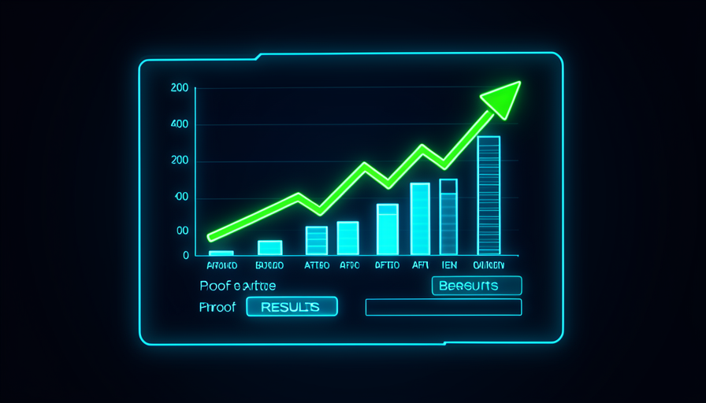

💡 Novo aqui? Três palavras antes de começar
- KPI — o número que importa: o que você quer mover (tempo gasto, vendas, erros). É o seu "placar".
- Case study — um relato curto de um trabalho real: o problema, o que você fez e o número que mudou.
- Track record — seu histórico: a lista de resultados que prova que você entrega de verdade, não por sorte.
🎯 Definir o número antes (o KPI)
Tem uma armadilha comum: a gente constrói uma coisa, acha legal, e segue em frente. Mas legal não é prova. A primeira pergunta — feita antes de começar — é simples: qual número eu quero mover?
Esse número é o seu KPI (indicador-chave). Pode ser minutos gastos numa tarefa, número de erros por semana, horas de fila, vendas fechadas. Escolhido cedo, ele vira o alvo. Sem alvo, você nunca saberá se acertou — só vai "achar" que melhorou.
🔑 A ideia central
Um bom KPI é um número só, fácil de medir e que importa de verdade:
- •Ruim: "ficar mais produtivo" → vago, não se mede.
- •Bom: "cortar o tempo do relatório semanal de 2h para 30min" → claro e medível.
💡 Dica prática
Antes de pedir qualquer coisa à IA, complete a frase: "vou saber que funcionou quando <número> for <valor-alvo>". Se você não consegue preencher, ainda não está pronto pra construir — está pronto pra pensar mais um pouco.
Conceitos-chave
🧪 Testar de verdade (não confiar no "parece")
A IA é muito boa em entregar coisas que parecem certas. Texto bem escrito, planilha bonita, código que abre. Mas "parece certo" e "está certo" são coisas diferentes — e a única forma de descobrir é testar de verdade, com casos reais.
Testar de verdade é usar o resultado no mundo: rodar a planilha com os seus números reais, mandar o e-mail pra você mesmo primeiro, passar o caso mais difícil pelo agente. Inclua de propósito o caso esquisito — é nele que as coisas quebram.
✓ Teste de verdade
- ✓Usa dados e casos reais seus
- ✓Inclui o caso difícil de propósito
- ✓Confere o resultado contra a realidade
- ✓Roda mais de uma vez
✗ Confiar no "parece"
- ✗Aceita porque "ficou bonito"
- ✗Só olha o caso fácil
- ✗Não confere os números
- ✗Roda uma vez e confia
💡 Dica prática
Faça você mesmo a conta de um caso "na mão" e compare com o que a IA entregou. Se baterem, ótimo. Se não baterem, você acabou de pegar um erro que ia te morder depois. Conferir um caso vale por dez "parece que tá certo".
Conceitos-chave
📊 Medir o antes e o depois
Você definiu o número (tópico 1) e testou (tópico 2). Agora vem a prova mais convincente que existe: a diferença entre o antes e o depois. Anote como era antes de você mexer e como ficou depois. Essa diferença é o seu resultado — em números, não em opinião.
A regra de ouro: meça o "antes" cedo, antes de construir, porque depois você não consegue voltar no tempo. Um "antes" anotado vale ouro; um "antes" lembrado de cabeça vira chute.
📈 O número que importa do mercado
- •Só ~6% das empresas são realmente boas em usar IA...
- •...e cerca de ~30% dos projetos de IA acabam abandonados.
A maioria abandona justamente porque nunca mediu se valeu a pena. Quem mede e prova fica na minoria que dá certo — essa lacuna é a sua vantagem.
Conceitos-chave
📁 Montar seu primeiro case study
Agora você tem tudo pra contar a história: o problema, o que você fez e o número que mudou. Isso é um case study — e não precisa ser longo. Três frases bem feitas já valem mais que uma página vaga.
A estrutura que sempre funciona é problema → ação → número. "Eu tinha o problema X. Fiz Y dirigindo a IA. O número Z mudou de A para B." Pronto: isso é prova, não promessa.
📝 Molde de case study (copie e preencha)
Objetivo: escrever o seu primeiro case em 5 minutos. Cole o molde num bloco de notas (ou peça à IA pra deixar mais redondo) e troque cada <parte> pelos seus dados.
CASE STUDY — <título curto, ex: "Relatório semanal em 1/4 do tempo"> PROBLEMA No meu trabalho de <sua função>, a tarefa <qual tarefa> me tomava <número antes> por <período, ex: semana>. AÇÃO Dirigi a IA para <o que você mandou ela fazer>, usando <skill / agente / automação que você montou>. NÚMERO <o KPI> saiu de <valor antes> para <valor depois> — uma melhora de <diferença, ex: 75%>. COMO VERIFIQUEI Testei com <casos reais> e comparei <antes> com <depois>.
Como saber que deu certo: ao terminar, leia em voz alta. Se um estranho entende o ganho sem você explicar e há um número concreto, o case está pronto.
💡 Dica prática
Guarde uma captura de tela do antes e do depois junto com o case. Imagem com número é a prova mais difícil de discutir — e a mais fácil de mostrar.
Conceitos-chave
📣 Mostrar o resultado (portfólio / LinkedIn)
Prova guardada na gaveta não abre porta nenhuma. O passo que muita gente pula — e que separa quem cresce de quem fica parado — é mostrar o resultado num lugar onde as pessoas certas vejam.
Pode ser um post no LinkedIn, um portfólio simples, ou até uma mensagem direta pro seu chefe. O conteúdo é o seu case: problema, ação, número. Você não está se gabando — está mostrando uma evidência. Evidência é respeitável.

✓ Como mostrar bem
- ✓Lidera com o número ("de 2h pra 30min")
- ✓Conta o problema em uma frase
- ✓Mostra a captura de tela do antes/depois
- ✓Convida quem tem o mesmo problema
✗ O que afunda o post
- ✗Só adjetivo ("ficou incrível!")
- ✗Sem número nenhum
- ✗Jargão técnico que ninguém entende
- ✗Esperar "estar perfeito" pra publicar
💡 Dica prática
Pegue o case study do tópico 4 e peça à IA: "transforme este case em um post curto de LinkedIn, começando pelo número e em linguagem simples". Você revisa, ajusta a voz e publica. O trabalho duro (medir e provar) já está feito.
Conceitos-chave
🔁 Repetir pra criar histórico
Um case prova que você consegue. Três, quatro, cinco cases provam que não foi sorte — provam que você tem um método. Esse é o pulo final da Trilha 2: virar a roda de novo, de propósito, pra criar histórico.
Cada novo case é mais rápido que o anterior, porque você reaproveita as skills e os moldes que montou. Em pouco tempo você tem um track record — e é isso que abre a porta da Trilha 3, onde você monta o seu Jarvis.
✋ Antes de seguir — o que transforma um build num resultado que vale?
🎓 Resumo do módulo
🏁 Você terminou a Trilha 2!
Você sabe dirigir a IA pra construir, conectar, delegar e — agora — provar. A próxima trilha leva isso a outro nível: 🤖 Trilha 3 — Jarvis & Arsenal, onde você monta seu assistente pessoal e recebe recursos prontos.